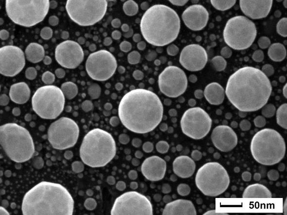

SERVICE 01
Enquire about this service
Materials & Structural Characterisation
Investigate the crystal structure, phase composition and surface features of materials used in research and industrial applications.
Techniques & equipment
X-ray diffraction (XRD; Rigaku MiniFlex); scanning electron microscopy (SEM; Phenom); atomic force microscopy (AFM; Nanosurf).
Typical applications
Phase identification, crystallinity assessment, surface morphology and topography.